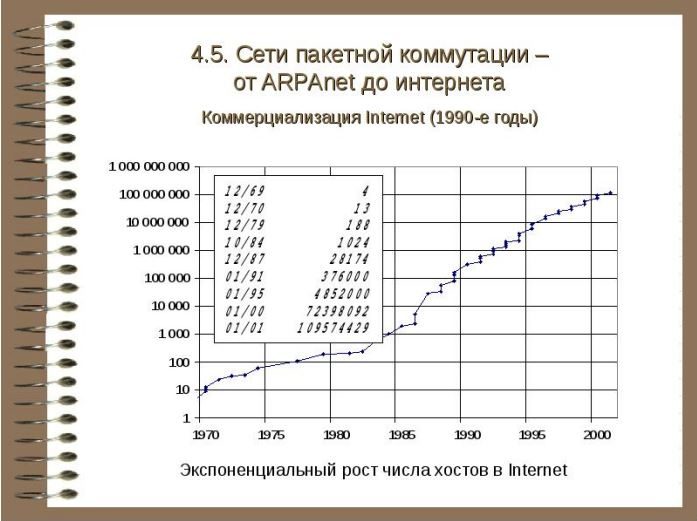

Лекция 1
Веб-технологии: вчера, сегодня, завтра
В рамках этой лекции рассмотрим историю создания и развития Web, универсальные
адреса ресурсов URL URI URN, протоколы взаимодействия http и https, разберемся, как
отправляются HTTP-запросы.
Интернет – это то, чем пользуются почти все. Ежедневно по сети пересылается около 247
миллиардов электронных писем, каждую минуту около 15 часов видеоконтента загружаются
в YouTube по всему миру, а создатель Интернета посвящен за свое изобретение в рыцари
королевой Англии. И как бы любители постапокалиптики не прочили Интернету скорую
смерть, эта технология подобно живому организму, развиваясь из микро-изобретения во
всемирную паутину, приобрела иммунитет к различным сбоям и атакам.
Ну что? Давайте, наконец, разберемся со всеми техническими особенностями этой чудо
технологии.
Обучаем современным профессиям с нуля

В рамках этой лекции рассмотрим способ оформлять страницы с помощью HTML и CSS, познакомимся с основными тегами, узнаем анатомию HTML документа и как селекторы помогают задать внешний вид элементам на веб-странице.